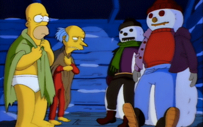
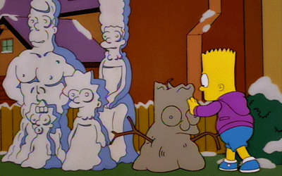
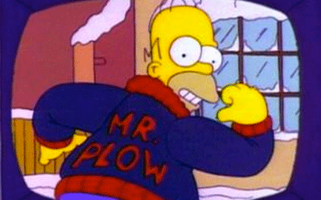

After the plant fails miserably at a routine fire drill, Mr. Burns
organizes a retreat to promote teamwork. Homer misunderstands and
brings his family, having to leave them to roam the park looking
for things to do. The employees are paired up and race for a cabin
at the top of the mountain. Last one there is fired!
Marge Be Not Proud

Bart is caught attempting to shoplift a video game. He tries to keep
his failed "four-finger discount" trip a secret from Homer and Marge,
and initially succeeds. But unfortunately, Marge finds out when the
family returns to the same store to have the family Christmas photo
taken.
Mr. Plow

After Homer wrecks both of the family cars in a snowstorm, he purchases
a snowplow truck and uses it to start a business as "Mr. Plow," which
proves to be surprisingly successful. Things go well for Homer until
Barney starts his own plow business ("The Plow King"), competing with
Homer, and steals all of Homer's customers.